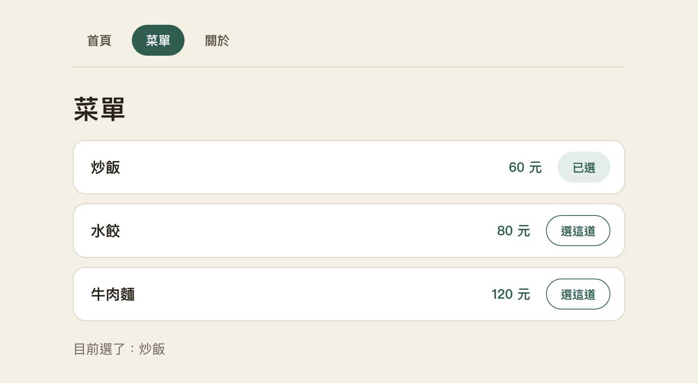
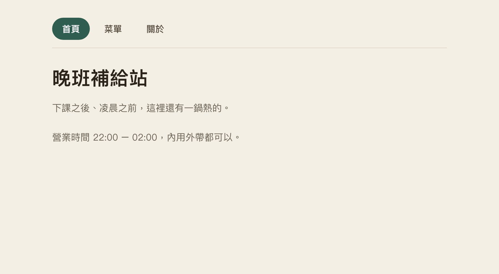
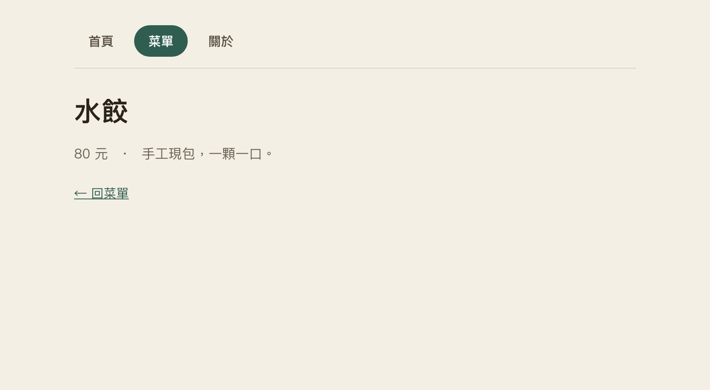
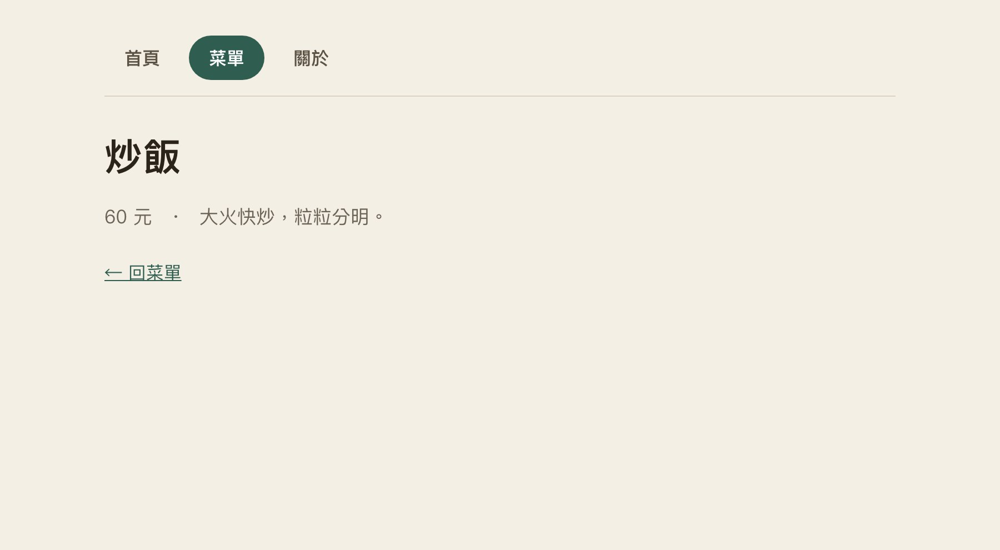
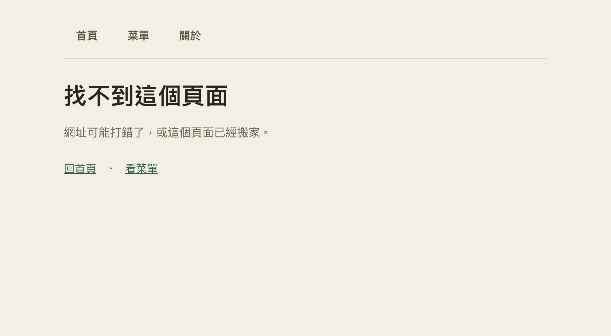
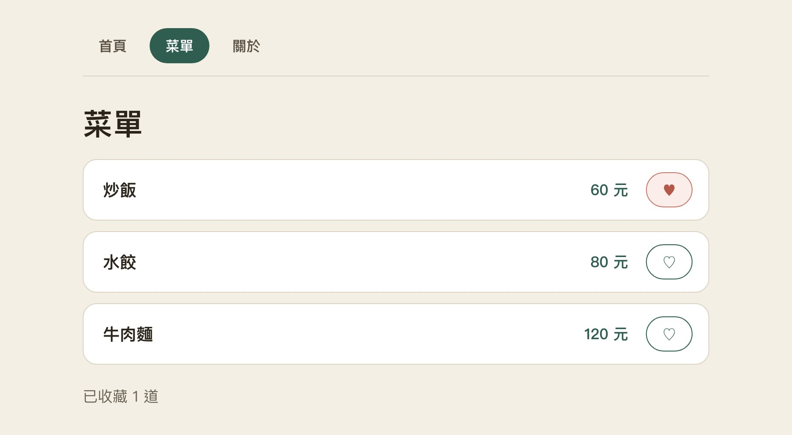

CH8 · Angular 多頁網站
Angular 多頁網站
用 Router 把三頁接起來，讓網址決定畫面、讓作品可以被走訪
CH8 · 02
02/60
本週大綱｜今天會完成什麼
今天先用 9 頁複習網址與路徑，再走四段：先把專案開對，再把三頁接起來，最後補詳情與可重用元件。
- 01｜VS Code：ng new 建專案、ng serve 預覽、確認網址。
- 02｜Router：Routes、provideRouter、router-outlet、routerLink，接通三頁。
- 03｜動態詳情：menu/:id + input + computed，一頁服務多筆資料。
- 04｜元件與作品：input／output 拆卡片，六題選一題完成可展示作品。
CH8 · 03
03/60
網址長什麼樣
網址是五段拼起來的；Router 只管中間那一段「路徑」。
- 協定＋網域：用什麼方式連、連到哪一台機器。
- 路徑：要哪一頁或哪個檔案，/menu/m1 就是路徑。
- 查詢 ? 與錨點 #：附帶條件與頁內位置，不算換頁。
- 本週路線表的 path: 'menu'，比對的就是網域後面這一段。
CH8 · 04
04/60
路徑：從哪裡出發
路徑是一張路線：先決定起點，再一路走到目標檔案。
- 從「網站根」出發，開頭是 /：絕對路徑。
- 從「目前這個檔案」出發：相對路徑。
- .. 往上一層，資料夾名稱往下一層。
- 右圖：我在 pages/menu.html，要找 logo.png。
CH8 · 05
05/60
絕對路徑：三種寫法
絕對路徑的起點固定，檔案搬到哪個資料夾都不受影響。
- 根路徑 /：從網站最上層算起，站內最穩。
- 完整網址：含協定與網域，用來連別人的網站或 CDN。
- 磁碟路徑 C:\…：只有你的電腦有，換電腦就破圖。
<!-- 1. 根路徑 -->
<img src="/images/logo.png">
<!-- 2. 完整網址 -->
<img src="https://example.com/logo.png">
<!-- 3. 磁碟路徑 -->
<img src="C:\Users\me\logo.png">// 1 自己網站內最穩
// 2 連到別人的網站
// 3 不要用：換電腦就破圖CH8 · 06
06/60
相對路徑：./ 與 ../
相對路徑從「目前這個檔案」算起，整個資料夾搬家也不會壞。
- 同一層：直接寫檔名，./ 可以省略。
- 往下一層：資料夾名／檔名。
- 往上一層：../，可連用 ../../。
- 起點是檔案所在的資料夾，不是你現在看的網頁網址。
<!-- 目前檔案：pages/menu.html -->
<img src="soup.png">
<img src="./soup.png">
<img src="img/soup.png">
<img src="../images/logo.png">
<a href="../index.html">首頁</a>// 同一層：直接寫檔名，./ 可省略
// 往下：資料夾名／檔名
// 往上：../ 一次上一層，可連用CH8 · 07
07/60
複習 img：src 與 alt
img 靠 src 找圖；路徑錯一個字，就變破圖。
- src：圖片在哪，相對或絕對都可以。
- alt：圖載不進來時顯示的文字，也給朗讀軟體用。
- width／height：先預留位置，版面不會跳動。
- 部署到伺服器後，檔名大小寫要完全一致。
<img src="images/soup.jpg"
alt="招牌湯麵"
width="320">// 破圖：路徑拼錯、大小寫不同、副檔名漏掉
// alt：圖壞掉時顯示，也給朗讀軟體
// 檔名用英數與 -，避開中文和空白CH8 · 08
08/60
複習 a：href 連到哪裡
a 靠 href 指到目的地，寫法和 img 的 src 一樣。
- 同站頁面：相對路徑或 / 開頭的根路徑。
- 外站：完整網址；target="_blank" 會開新分頁。
- rel="noopener" 是保護機制：新分頁拿不到 window.opener，不能竄改你的原頁面。
- #id 頁內跳轉：連結寫 href="#order"，目標元素加 id="order"，點了就捲過去。
<a href="menu.html">菜單</a>
<a href="/about">關於</a>
<a href="https://angular.dev"
target="_blank" rel="noopener">文件</a>
<a href="files/menu.pdf" download>下載</a>
<a href="#order">跳到訂購區</a>
<h2 id="order">訂購區</h2>// 同站頁面：相對或根路徑
// _blank：開新分頁
// noopener：新分頁不能操控原頁面
// #order：對到 id="order" 的元素CH8 · 09
09/60
常見 CDN：用網址借現成檔案
CDN 是別人架好的伺服器，用完整網址就能借現成的檔案。
- 常見用途：CSS 框架、JS 套件、網路字型、圖片。
- 不用下載，但斷網或對方出問題就載不到。
- 網址裡寫死版本號（如 @5.3.3），避免對方更新害你壞掉。
<link rel="stylesheet"
href="https://cdn.jsdelivr.net/npm/bootstrap@5.3.3/dist/css/bootstrap.min.css">
<script src="https://cdn.jsdelivr.net/npm/@tailwindcss/browser@4"></script>CH8 · 10
10/60
整理表：六種寫法一次比
遇到路徑，先問起點在哪，再看換環境會不會壞。
about.html最常用，整包搬家不壞../images/a.png跨資料夾，檔案移位會壞/images/a.png從網站根算起，位置固定https://site.com/a.png外站資源，斷網就失效https://cdn.jsdelivr.net/…套件字型，要鎖版本C:\Users\me\a.png不能用，別人電腦沒有CH8 · 11
11/60
Angular 裡的路徑
Angular 站內換頁用 routerLink，檔案路徑的規則照舊。
- 站內換頁用 routerLink="/menu"，不是 href="menu.html"。
- 圖片等靜態檔放 public/，模板用 src="images/…" 引用。
- index.html 的 <base href="/"> 讓相對路徑從網站根算起。
- 站外連結與 CDN，仍然是完整網址加 href。
<a routerLink="/menu">菜單</a>
<img src="images/soup.jpg" alt="湯麵">
<a href="https://angular.dev">Angular 文件</a>// 站內：Router 路徑，不是檔名
// 靜態檔：public/ 底下，從網站根算起
// 站外：一般 href 加完整網址CH8 · 12
12/60
把菜單變成一個網站
一個網站不是「一頁很長」，而是「好幾個各司其職的頁」。
- 首頁：讓第一次來的人知道這是什麼。
- 菜單：三筆餐點，可以選、可以看詳情。
- 關於：營業時間、故事、怎麼找到這家店。
- 再加一頁詳情：點一道菜，看它的價錢與說明。
CH8 · 13
13/60
先畫三扇門
動手之前，先決定「有哪幾頁、各負責什麼」。
- /home：一句話說你是誰、賣什麼。
- /menu：三筆餐點，這是主要互動頁。
- /about：故事與營業資訊。
- 三頁都用同一條導覽列，走到哪都看得到。
CH8 · 14
14/60
VS Code｜開啟本週專案
環境已在「VS Code 環境設定」簡報裝好；先確認預覽能跑，再開始貼 Router。
- 建：ng new midnight-menu --style=css --ssr=false --zoneless --skip-tests。
- 開：code . 開專案，終端機輸入 ng serve。
- 貼：在 src/app 新增 pages 資料夾與檔案，依範例貼上。
- 測：瀏覽器開 localhost:4200，走 /home → /menu → /about。
怎麼開始
- 先完成「VS Code 環境設定」簡報：node -v、ng version 都要有版本號。
- 終端機輸入 ng new midnight-menu --style=css --ssr=false --zoneless --skip-tests 建專案。
畫面看哪裡
- VS Code 左側 Explorer 找 src/app；本週會用 app.ts、app.html、app.config.ts、app.routes.ts 與 pages/*.ts。
- 底下終端機跑 ng serve；瀏覽器開 localhost:4200 看結果。
怎麼貼範例
- 依範例頁左側檔名，在 Explorer 新增資料夾與檔案（右鍵 New Folder／New File），或覆蓋既有檔案。
- package.json 與 node_modules 不用改。
怎麼驗證
- 存檔後瀏覽器會自動更新；測 /home、/menu、/about、瀏覽器上一頁與重新整理。
- 終端機出現紅字就是編譯錯誤，先看檔名與 imports。
真的卡住
- 關掉舊的 ng serve（Ctrl + C）再重開；埠號被占用可用 ng serve --port 4300。
- 回到上一個可運作步驟；其餘看環境設定簡報的卡關頁。
CH8 · 15
15/60
同一個外殼，換一個房間
導覽列不會消失，只有中間那塊內容在換。
- 這種「外殼不動、內容替換」的網站叫 SPA。
- 外殼（導覽列、頁尾）放在 App 元件裡。
- 中間留一個出口，哪一頁要出現由網址決定。
- 好處：換頁很快、狀態不會全部重來。
<div class="shell">
<nav>…導覽列…</nav>
<router-outlet />
</div>.shell { max-width: 760px; margin: 0 auto; }CH8 · 16
16/60
網址像房間地址
/menu 不是 menu.html，它是一個「路徑」。
- 網址的路徑部分對應路線表裡的一條規則。
- /menu 對到 MenuPage 元件，/about 對到 AboutPage。
- 沒有 .html 副檔名——伺服器只回一個 index.html，剩下交給 Router。
- 重新整理時，伺服器要能回 index.html（SPA fallback）。
CH8 · 17
17/60
換頁和開新網站有何不同
站內換頁交給 Router，站外才用一般的 href。
- routerLink：站內導航，不重載整頁。
- href：連到別的網站，或下載檔案。
- 把站內連結寫成 href，會整頁重載——狀態全部重來。
- 本週只比較「站內導航」這一種，不是說 href 都錯。
CH8 · 18
18/60
今天的三個檢查點
今晚的驗收只有三件事，做到就有作品。
- 三頁能互相切換，網址跟著變。
- 菜單頁有三筆本機資料，而且能互動。
- 直接輸入 /home、/menu、/about，都能看到對應頁面。
- 詳情頁與元件拆分是加分項，不是必要條件。
01 / 03
路由與外殼
把一頁拆成很多頁：網址決定內容，外殼保持不動。
CH8 · 20
20/60
先準備三個房間
每一個路由頁面，其實就是一個 standalone 元件。
- HomePage、MenuPage、AboutPage 三個元件，各自有自己的標題。
- 不用 CLI 建立，樣板裡已經寫好，你只要改內容。
- 元件住在 src/app/pages/ 底下，檔名就是類別名。
- 路由只認「元件」，不認檔案路徑。
CH8 · 21
21/60
路線表也是物件陣列
路線表就是一個物件陣列：path 對應 component。
- { path: 'home', component: HomePage }。
- path 不寫開頭斜線（寫 /home 會匹配不到）。
- 陣列順序就是比對順序，後面的先贏不了前面。
- 每加一頁，就在這裡加一筆。
export const routes: Routes = [
{ path: 'home', component: HomePage },
{ path: 'menu', component: MenuPage },
{ path: 'about', component: AboutPage },
];CH8 · 22
22/60
讓應用讀得到路線表
路線表寫好了，還要交給應用程式，Router 才會動。
- provideRouter(routes) 放在 app.config.ts 的 providers。
- 完整啟動碼由樣板提供，你只需要確認 routes 有註冊。
- 少了這一行，routerLink 點了不會有反應。
- app.config.ts 只改一次，之後都改 routes。
export const appConfig: ApplicationConfig = {
providers: [
provideZonelessChangeDetection(),
provideRouter(routes),
],
};CH8 · 23
23/60
內容要有出場位置
外殼要留一個位置，告訴 Router「頁面放這裡」。
- <router-outlet /> 就是那個出口。
- App 的 imports 要加 RouterOutlet，否則 Angular 不認識這個標籤。
- 少了出口：網址會變、畫面不動——這是最常見的錯誤。
- 出口只有一個，放在導覽列下面。
<div class="shell">
<nav>…</nav>
<router-outlet />
</div>import { RouterOutlet } from '@angular/router';
@Component({
imports: [RouterOutlet],
})
export class App {}CH8 · 24
24/60
做一個會導航的連結
routerLink 讓連結變成「站內導航」，不會整頁重載。
- <a routerLink="/menu">菜單</a>。
- 路徑寫字串就好，開頭可以帶斜線（跟 routes 的 path 不一樣）。
- App 的 imports 要加 RouterLink。
- 點了之後網址變、內容換，但導覽列不會閃一下。
<a routerLink="/menu">菜單</a>import { RouterLink } from '@angular/router';
@Component({
imports: [RouterLink],
})
export class App {}CH8 · 25
25/60
把三頁接起來
三個連結各指一個路徑，導覽列就完成了。
- 首頁 → /home、菜單 → /menu、關於 → /about。
- 三個路徑都要在 routes 裡有對應。
- 順序不重要，但名稱要一致（大小寫也算）。
- 測法：依序點三次，每次都看標題有沒有換。
<a routerLink="/home">首頁</a>
<a routerLink="/menu">菜單</a>
<a routerLink="/about">關於</a>// 三個 path 都要在 routes 裡有對應CH8 · 26
26/60
我現在在哪一頁
使用者要知道「我現在在哪」，不能只靠猜。
- routerLinkActive="active"：目前路徑符合時掛上 active。
- App 的 imports 要加 RouterLinkActive。
- active 的樣式寫在 app.css，例如底色、底線、字重。
- 除了顏色，也加粗或加底線——不能只靠顏色。
<a routerLink="/menu"
routerLinkActive="active">菜單</a>nav a.active {
background: #2f5d50;
color: #fff;
}import { RouterLinkActive } from '@angular/router';
@Component({
imports: [RouterLink, RouterLinkActive],
})CH8 · 27
27/60
完整路徑還是前綴
「符合」有兩種：預設允許前綴；只有真的需要完全相同時才加 exact。
- 預設是前綴比對：/menu/m1 也算符合 /menu，所以進詳情時「菜單」仍會亮。
- [routerLinkActiveOptions]="{ exact: true }" 代表只有網址完全相同才套 active。
- 本例 /home 沒有子頁，其實不必加 exact；不要為了背語法多寫設定。
- 等詳情頁做好後，實測 /menu 與 /menu/m1 的導覽狀態。
<!-- 預設：/menu/m1 也會維持 active -->
<a routerLink="/menu"
routerLinkActive="active">菜單</a>
<!-- 只有「完全相同」才需要 exact -->
<a routerLink="/about"
routerLinkActive="active"
[routerLinkActiveOptions]="{ exact: true }">關於</a>// exact 是選配；本例菜單刻意保留前綴比對CH8 · 28
28/60
路由接線猜謎
一條連結要能動，需要四個角色接起來。
- RouterLink：使用者點的入口。
- Routes：path 對應哪個元件。
- RouterOutlet：頁面出現的位置。
- Component：真正畫出來的內容。
- 四個缺一個，就會出現「點了沒反應」或「網址變了畫面沒變」。
CH8 · 29
29/60
找錯：網址動了畫面沒動
網址動了、畫面沒動，九成是出口或 imports 少了。
- 先看外殼有沒有 <router-outlet />。
- 再看 App 的 imports 有沒有 RouterOutlet／RouterLink。
- 第三：path 拼錯（/Menu 與 /menu 不一樣）。
- 一次只修一個，修完立刻測。
CH8 · 30
30/60
空網址要去哪裡
直接打開網站時，網址是空的——那要去哪一頁？
- { path: '', redirectTo: 'home', pathMatch: 'full' }。
- pathMatch: 'full' 表示只匹配「完全空」的路徑。
- 少了 full，任何路徑都會被導去首頁，其他頁就進不去。
- redirectTo 寫的是 path，不是 /home。
{ path: '', redirectTo: 'home', pathMatch: 'full' },CH8 · 31
31/60
走錯路也能回家
打錯網址不該看到一片空白。
- { path: '**', component: NotFoundPage } 放在最後一筆。
- ** 是萬用字元：前面都沒匹配到才會用到它。
- 404 頁要說清楚「找不到」與「接下來怎麼辦」。
- 至少放一個回首頁的連結，不要讓使用者卡住。
// 放最後一筆
{ path: '**', component: NotFoundPage },CH8 · 32
32/60
首頁說清楚你做什麼
首頁只有一個任務：讓陌生人知道你在做什麼。
- 一句話說你是誰、賣什麼。
- 一個明顯的入口（前往菜單）。
- 首頁自己也要 import RouterLink 才能用 routerLink。
- 寫虛構店家就好，不要放真實電話或 Email。
<h1>晚班補給站</h1>
<p class="lead">凌晨之前，還有一鍋熱的。</p>
<a routerLink="/menu">看菜單</a>// 首頁自己也要 import RouterLinkCH8 · 33
33/60
菜單沿用上週資料
上週的菜單資料整組搬進來，只是換一個房間。
- meals.ts 不變，MenuPage 匯入 meals。
- @for + track 也照舊。
- 加點互動留在 MenuPage 裡面，它是這一頁的狀態。
- 離開再回來，狀態會重設——下一節會解釋。
@for (meal of meals; track meal.id) {
<li class="card">
<span>{{ meal.name }}</span>
<span>{{ meal.price }} 元</span>
</li>
}import { Meal, meals } from '../meals';
export class MenuPage {
meals: Meal[] = meals;
}CH8 · 34
34/60
關於頁有不同任務
關於頁不是「再放一次菜單」，它有自己的任務。
- 說一個虛構的故事：為什麼開這家店。
- 放營業時間與地點（虛構）。
- 三頁的內容要明顯不同，否則導覽就沒意義。
- 同桌互看：能不能一句話說出三頁的差別。
<h1>關於這家店</h1>
<p class="lead">老闆原本做夜班，收工後找不到東西吃。</p>
<p class="lead">營業時間 22:00 – 02:00。</p>// 關於頁的任務是「故事與營業資訊」CH8 · 35
35/60
路線順序很重要
路線表是從上往下比對，第一個符合的就贏。
- 把 ** 放第一列，後面的 /home、/menu 永遠輪不到。
- 具體路徑要在前面，萬用路徑永遠最後。
- 這跟 CSS 的優先權不同——這裡是「順序決定一切」。
- 測法：把 ** 移到最前面，看三頁是不是全變 404。
CH8 · 36
36/60
上一頁不是自製返回鈕
瀏覽器的上一頁本來就會動，不需要自己做返回鈕。
- Router 會把每次導航寫進瀏覽器歷史。
- 前進、後退都要測，不能只測點連結。
- 自製「返回」按鈕容易跟歷史打架，除非有明確需求。
- 測的時候另開預覽視窗，免得測到編輯器的歷史。
<!-- 瀏覽器上一頁本來就會動 -->
<a routerLink="/menu">回菜單</a>// Router 會把每次導航寫進瀏覽器歷史CH8 · 37
37/60
重新整理要測哪個網址
在 /menu 直接重新整理，考驗的是伺服器，不是 Router。
- SPA 只有一個 index.html，伺服器要對任何路徑都回它。
- ng serve 的開發伺服器已經處理好；自己架站要設定 fallback。
- 本週不教部署，但要知道「重整會 404」不是程式的錯。
- 測法：在 /menu 按 F5，看畫面有沒有回來。
<!-- 在 /menu 按 F5 -->
<!-- 伺服器要對任何路徑回 index.html -->// SPA fallback 是伺服器的責任，不是 Router 的CH8 · 38
38/60
離開頁面，資料會留下嗎
離開菜單頁再回來，剛剛選的那道菜不見了。
- 頁面的 signal 只在這一頁活著；離開就重建。
- 重新整理也會重設——因為資料沒有存到任何地方。
- 這是本週的界線：不做跨頁購物車、不做持久化。
- 要跨頁共享，需要 service，那是後面的課。
CH8 · 39
39/60
三頁連通檢查
前半場結束，用四個動作確認三頁真的通了。
- home → menu → about，每一頁標題都不同。
- 按瀏覽器上一頁，回到前一頁。
- 手動打 /oops，看到 404 而不是空白。
- 在 /menu 重新整理，畫面還在。
02 / 03
參數與元件
同一頁服務很多筆資料；把重複的卡片抽成元件。
CH8 · 41
41/60
一張詳情接很多餐點
三筆餐點不需要三個詳情頁，一個頁面接住所有 id。
- { path: 'menu/:id', component: DetailPage }。
- :id 是佔位名稱，真實網址長這樣：/menu/m1。
- 同一個元件，換 id 就換內容。
- 注意：/menu 與 /menu/:id 是兩條不同的路線。
{ path: 'menu/:id', component: DetailPage },CH8 · 42
42/60
網址把 id 交進來
網址上的 id 要進到元件裡，才有辦法查資料。
- provideRouter(routes, withComponentInputBinding())。
- 詳情頁宣告 id = input<string>()，Router 會自動填。
- 模板讀 id()，跟讀一般 input 一樣。
- 不要用只讀一次的 snapshot——換 id 時畫面不會更新。
export class DetailPage {
id = input<string>();
}
// app.config.ts
provideRouter(routes, withComponentInputBinding())CH8 · 43
43/60
找到那一筆餐點
有了 id，就用 find 從三筆資料裡挑一筆。
- meal = computed(() => meals.find(m => m.id === this.id()))。
- computed 會盯著 id()，id 一變就重新找。
- 找不到時 find 回傳 undefined——這是正常結果，不是錯誤。
- @if (meal(); as item) 的別名寫法，讓模板少一次取值。
@if (meal(); as item) {
<h1>{{ item.name }}</h1>
} @else {
<p>找不到餐點</p>
}meal = computed(() =>
meals.find((m) => m.id === this.id()),
);CH8 · 44
44/60
找不到資料也能離開
路徑有效，資料還是可能不存在——這兩件事要分開教。
- @if 有資料 → 顯示內容；@else → 顯示「找不到餐點」。
- 這裡是「資料找不到」，跟第 31 頁的「路徑不存在」不同。
- 提示要給出口：回菜單的連結。
- 測法：/menu/m999，看是不是顯示提示而不是空白。
@if (meal(); as item) {
<h1>{{ item.name }}</h1>
<a routerLink="/menu">← 回菜單</a>
} @else {
<h1>找不到餐點</h1>
<a routerLink="/menu">← 回菜單</a>
}// 路徑存在 ≠ 資料存在：兩種「找不到」要分開CH8 · 45
45/60
從卡片走進詳情
詳情的入口放在卡片上，網址由資料決定。
- [routerLink]="['/menu', meal.id]"：陣列寫法可以帶參數。
- m1 的卡片連到 /menu/m1，m2 連到 /menu/m2。
- MenuPage 要 import RouterLink。
- 測法：連看 m1、m2，再按上一頁，內容都要對。
<a [routerLink]="['/menu', meal.id]">看詳情</a>import { RouterLink } from '@angular/router';
@Component({
imports: [RouterLink],
})
export class MenuPage {}CH8 · 46
46/60
讓卡片只負責卡片
一張卡的模板重複三次，就該抽成元件。
- MealCard：meal = input.required<Meal>()。
- 父層：<app-meal-card [meal]="meal" />，imports 加 MealCard。
- 子層只負責顯示，不修改傳進來的資料。
- 抽元件的判斷標準：同一段模板出現兩次以上。
<app-meal-card [meal]="meal" />:host { display: contents; }export class MealCard {
meal = input.required<Meal>();
}CH8 · 47
47/60
按下收藏，通知誰
卡片被按了，怎麼通知上面的父層？
- picked = output<string>()，子層 picked.emit(meal().id)。
- 父層：(picked)="toggle($event)" 接住。
- 子層不直接改父層的收藏清單——只發通知。
- 這就是「資料向下、事件向上」。
<button (click)="picked.emit(meal().id)">收藏</button>export class MealCard {
picked = output<string>();
}CH8 · 48
48/60
父層接住並更新
收藏清單留在父層，卡片只負責顯示實心或空心。
- 父層管 ids signal；子層再收 favorite = input(false)。
- 父層傳 [favorite]="isFav(meal.id)"。
- 點 m1、m2、再點 m1：數量 2 → 1，只剩 m2 是實心。
- 子層不需要知道「怎麼改」，只要知道「現在是不是」。
export class MealCard {
meal = input.required<Meal>();
favorite = input(false);
picked = output<string>();
}03 / 03
六題與工作坊
選一個題目，把三頁網站做到能給別人操作。
CH8 · 50
50/60
六條路，從三頁開始
六題從「三頁」長出來，先走一條就好。
- 主做：練習 1 宵夜三頁小站。
- 基礎：練習 2 作品集、練習 4 導覽列。
- 標準：練習 3 詳情導覽、練習 5 網址救援。
- 進階：練習 6 可重用餐點卡。
CH8 · 51
51/60
六步與多檔案怎麼對照
這一週的範例頁多了幾個檔案，看的時候要注意「改了哪一個」。
- 左側依實際檔名分頁：app.ts／app.html／app.config.ts／app.routes.ts／pages/*.ts。
- 每一步都會標示這一步新增或修改哪幾個檔案。
- 右側是那一步真實建置的成果，網址在下方。
- 切換步驟會重新載入，回到該步的初始狀態。
CH8 · 52
52/60
練習 1｜宵夜三頁小站
三頁、一條導覽列、一份菜單，先讓它走起來。
主做｜今晚一定要完成
- 空網址進 home；三頁標題不同。
- menu 有三筆資料與選餐互動。
- 前進後退正確。

CH8 · 53
53/60
練習 2｜我的三頁作品集
同一套架構，換成你的名字與作品。
基礎｜換內容不換架構
- 三頁可切；作品恰兩筆。
- 收藏可開關。
- 沒有真實聯絡資訊。

CH8 · 54
54/60
練習 3｜餐點詳情導覽
一個詳情頁，接住所有餐點。
標準｜參數與 computed
- m1、m2 不需離開詳情就更新。
- m999 顯示提示與返回。
- /menu 缺 id 回正常菜單。

CH8 · 55
55/60
練習 4｜不迷路導覽列
走到哪一頁，導覽列就要說得出來。
基礎｜導覽狀態
- home 精確選中。
- menu 與 menu/m1 都選中菜單。
- 前進後退同步。

CH8 · 56
56/60
練習 5｜網址救援站
空網址、正常頁、打錯的網址，三種都要有去處。
標準｜錯誤路徑
- 空路徑到 home。
- 正常三頁不進 404。
- /oops 進 404 且能返回。

CH8 · 57
57/60
練習 6｜可重用餐點卡
一張卡抽成元件，資料往下、事件往上。
進階｜父子元件
- 三卡顯示各自資料。
- 事件帶正確 id。
- m1、m2、m1 後只剩 m2。

CH8 · 58
58/60
動手：你的三頁網站
接下來 30 分鐘，把三頁做到能給別人操作。
- 前 5 分鐘：選主題、決定三頁各要說什麼。
- 中間 20 分鐘：完成主做題（三頁、資料、互動、導覽）。
- 最後 5 分鐘：照檢查點自己走一遍。
- 做不完帶回去補，不算作業。
CH8 · 59
59/60
請同桌當第一次來的訪客
自己知道路，別人不一定知道。
- 同桌不口頭指路，只用滑鼠和鍵盤走完三頁。
- 看三件事：找得到菜單嗎？看得到內容嗎？回得去首頁嗎？
- 進階題再測：網址打錯會怎樣。
- 各說一個「清楚的地方」與一個「卡住的地方」。
CH8 · 60
60/60
保存可再打開的作品
最後五分鐘，把作品帶走；下週的期中作業可以直接從它開始。
- 存檔：改完按 Ctrl + S（Cmd + S），ng serve 沒有紅字才算數。
- 備份：把 midnight-menu 資料夾壓成 ZIP（不含 node_modules），存到雲端或隨身碟。
- 重開：解壓後在資料夾裡執行 npm install，再 ng serve。
- 確認清單：三頁、資料、互動、導覽、404。